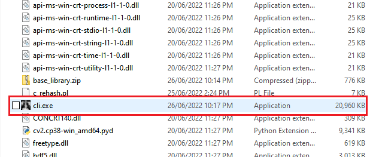
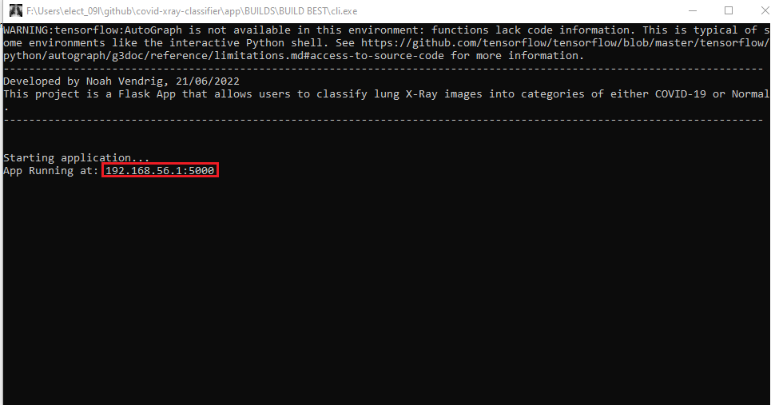
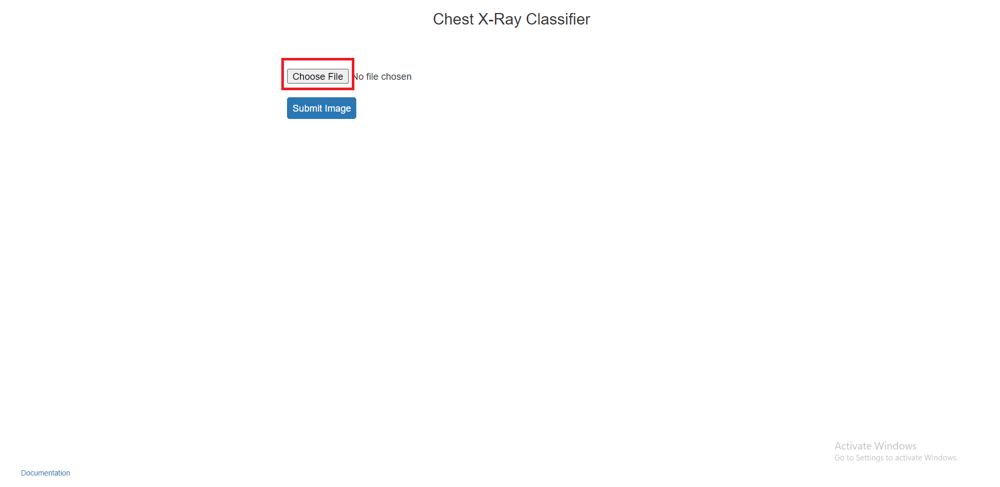
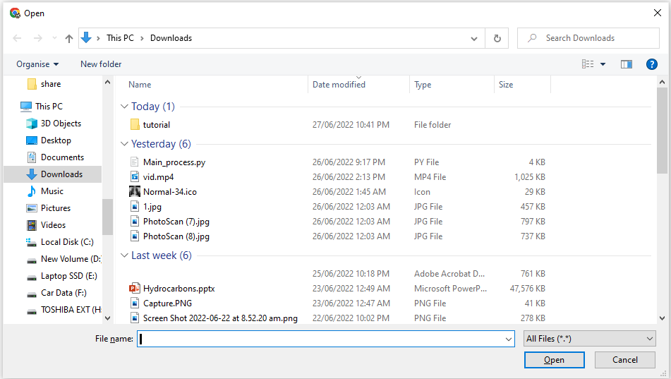
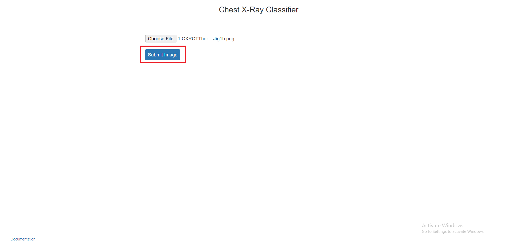
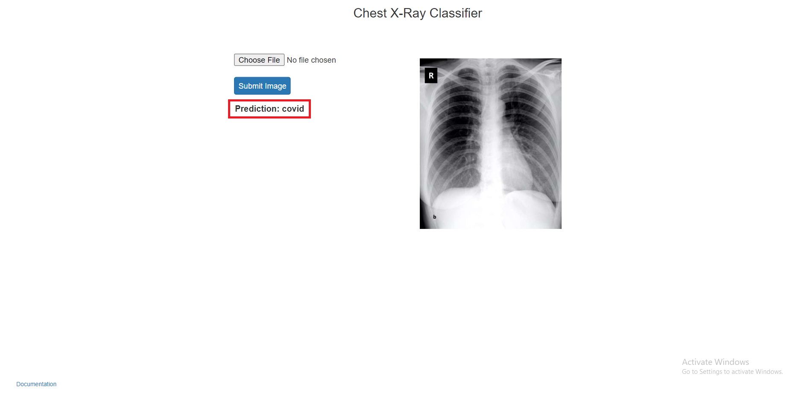
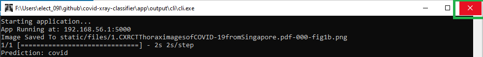

Instructions
Note
This app has been tested on Google Chrome (v102.0.5005.115), Microsoft Edge (v102.0.1245.44) and Firefox (v101.0.1) It has only been tested on Windows 10 (v21H2)
Launching the Application
Open the .exe file named “cli.exe”
Wait for the app to automatically open in your web browser. If it doesn’t, copy the IP displayed in the terminal titled ‘cli.exe’ and paste it into your browser

Using the Application (Any OS)
Using the file browser button, select the X-ray image that you wish to generate a prediction for.
 Once the file has been selected, press the submit button
- Wait for the model to generate a prediction, and it will be displayed on the screen.
- 
Terminating the Application
- To terminate the application, close the terminal ‘cli.exe’ in order to close the webserver.
- 
Accessing Documentation
- Documentation can be obtained either by heading to:
http://address:port/docs (e.g. http://192.168.0.125:5000/docs)
Clicking on the docs button in the home page of the app